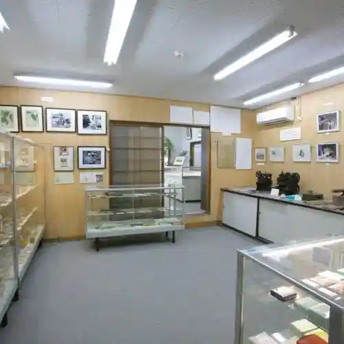
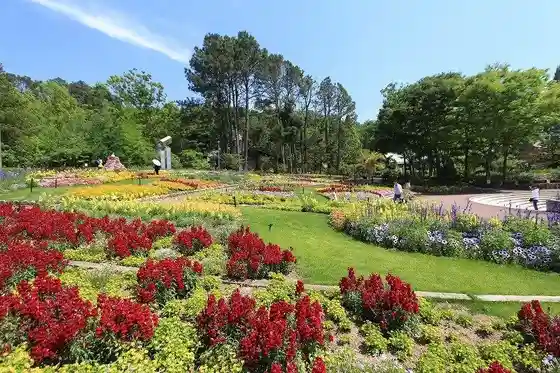
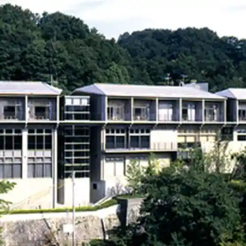
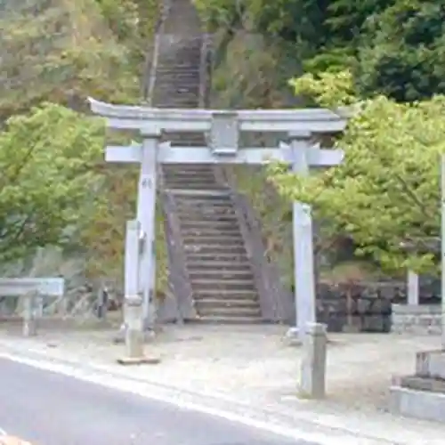

Tsumayoji Shiryoshitsu
Kawachinagano, Osaka · 0721-52-2901 · Official / source link

Hikari Taki Tera Campground
Kawachinagano, Osaka · 0721-64-1977 · Official / source link
Osakafuritsu Hana no Bunka Sono
Kawachinagano, Osaka · 0721-63-8739 · Official / source link

Tennen Onsen Kei no Yado Kawachinagano So
Kawachinagano, Osaka · 0721-62-6666 · Official / source link

Ten Shrine
Kawachinagano, Osaka · Official / source link

Amami Onsen Nanten En
Kawachinagano, Osaka · 0721-68-8081 · Official / source link
Iwa Yu Tera
Kawachinagano, Osaka · 0721-62-4000 · Official / source link
Iwa Yu Yama
Kawachinagano, Osaka · Official / source link
Kawachinagano Tourist Information
Kawachinagano, Osaka · 0721-55-0100 · Official / source link
Taki Hatake Falls
Kawachinagano, Osaka · 0721-53-1111 · Official / source link
Taki Hatake Furusato Bunkazai no Mori Center
Kawachinagano, Osaka · 0721-63-0201 · Official / source link
Taki Hatake Dam
Kawachinagano, Osaka · 0721-62-3672 · Official / source link
Yakuju Yama Enmei Tera
Kawachinagano, Osaka · 0721-62-2261 · Official / source link
Kanshin Tera
Kawachinagano, Osaka · 0721-62-2134 · Official / source link
Roadside Station Oku Kawauchi Kuromaro no Sato
Kawachinagano, Osaka · 0721-56-9606 · Official / source link
Nagano Park
Kawachinagano, Osaka · 0721-62-2772 · Official / source link
Kansai Saikurusupotsu Center
Kawachinagano, Osaka · 0721-54-3101 · Official / source link